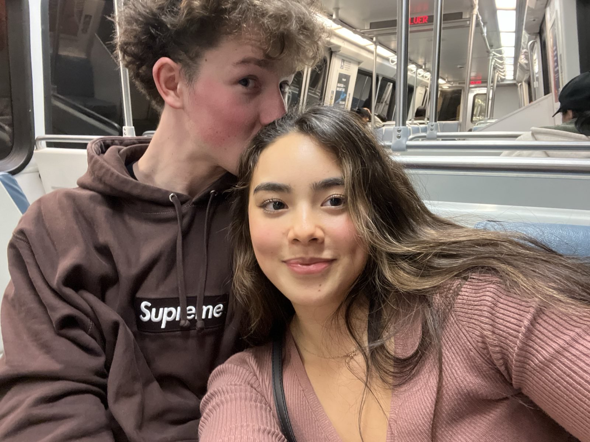

will + jolene
together since january 17, 2026 · jmu & penn state
how we met, our story, notes, photos, what's next.
made by will, for jolene

together since january 17, 2026 · jmu & penn state
how we met, our story, notes, photos, what's next.
made by will, for jolene